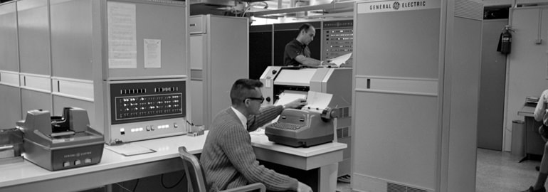
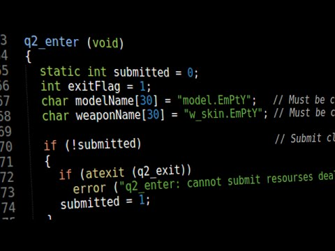

Краткая история программирования / С чего все начиналось
Мы расскажем вам краткую историю с чего все начиналось и как зарождалось программирование. Также мы расскажем про самые первые языки программирования.
Изначально программирование имело крайне примитивный вид и практически не имело отличий от упорядоченного бинарного кода с формализованным подходом. По сути, при зарождении сферы отличий языка программирования от компьютерного кода было немного. Очевидных и естественных удобств для программиста не существовало, он обязан был обладать знаниями числовых кодов для каждой команды машины. Даже распределение памяти для выполнения команд ложилось на специалиста
Для упрощения обращения с ЭВМ люди стали активно разрабатывать языки, одним из первых стал Ассемблер. Для отображения переменных стали использоваться символьные наименования. Вместо числовых операций человеку достаточно знать мнемонические имена, их запоминание в разы облегчалось. Уже на этом этапе языки программирования стали более приближёнными к понятному для человека языку.
К первооткрывателям среди языков программирования относится Фортран – это сокращённое сочетание 2 слов: Formula и Translation. Создан уже в середине 50-х. До сих пор язык используется благодаря лёгкости и простоте написания, а также развитой системе библиотек для Фортран. Чаще используется для научных и инженерных подсчётов, а также активно применяется в физичке и остальных науках, связанных с математикой.
Узконаправленные языки
Из-за увеличения сфер использования ЭВМ появились и другие языки для отдельных разработок в новых сферах:
- экономическое направление оставалось незанятым до появления Кобол;
- Снобол – обрабатывает алгоритмы, связанные с текстами;
- Лисп. Работает на основании алгоритмов для отработки символов. Активно используется для формирования искусственного интеллекта.
Уже в 1968 г. был впервые запущен конкурс, в котором главным местом являлось звание лучшего языка программирования для начала карьерного пути. Данные планировалось использовать для обучения специалистов. Победу одержал Алгол-68, но он остался малоизвестным, о популярности и речь не идёт.
Специально для участия в конкурсе был создан Паскаль, разработчиком являлся Никлаус Вирт. Язык весьма доступный, удобный и объединяет немало мощных инструментов для структурирования информации. Несмотря на изначальную разработку с целью обучения студентов, Паскаль получил широкое распространение и активно развивался. Даже сегодня он является одним из лучших и известнейших языков программирования.
Для обучения детей в школах был создан Лого, у истоков стоял Самуэль Пайперт. Достоинства – простота работы и обилие возможностей.
В школах стал преподаваться простой язык Бейсик, он легко взаимодействует с ЭВМ в качестве прямого диалога. Время никак не повлияло на эту сферу, до сих пор Бейсик является самым простым языком для начала изучения большинства распространённых направлений программирования.
Создание языка C
Развитие возможностей вычислительного оборудования привело к необходимости написания ёмких программ для управления ЭВМ. Это место по праву занял язык Си, который стал активно использоваться в 70-х годах. Явным достоинством языка является его универсальность. Он превосходит Паскаль благодаря наличию вложенных возможностей сотрудничества с разными машинными командами и подходящими частями памяти.
Си используется повсеместно в качестве инструментального языка для написания операционных платформ, трансляционных устройств, баз данных и остальных прикладных, системных задач. Си не имеет чёткой направленности, он подходит для многих задач из-за эффективности, лёгкости переноса и экономного потребления ресурсов. Чаще всего Си по скорости обработки данных сопоставим с Ассемблером, производительность программ на обоих языках будет приблизительно равной. В небольшом языке заложена немалая мощность.
Пролог и Ада
Внедрение функционального программирования неизбежно повлекло создание Пролога. Задачи языка сводились к анализу и взаимодействию с человеческими языками. Логика приложения формальна, она оптимально подходит для автоматического решения задач и теорем.
Только в 80-х годах был разработан язык Ада. Он расширяет классическое понимание и свойства языков того периода. Ада могла решать задачи в режиме реального времени и моделировать независимые решения.
Классификация
Сегодня разработаны классификации языков по уровню работы, это распределение самое распространённое. Выделяют 3 основных уровня:
- 1. Низкий. Сюда относятся различные машинные языки или разновидности с символическим кодирование типа Ассемблера и Автокода. За основу взяты операторы машинных команд, только разработаны с привязкой к мнемоническому коду. Операндами являются уже не точные адреса, а символьное обозначение имён. Все модели разработаны для отдельных разновидностей ПК, они являются машинно-зависимыми. В подобных языках отмечается сильная зависимость языка от внутренних особенностей системы;
- 2. Высокий. Языки встречаются куда чаще, они более удобны в использовании. К ним причисляются: Алгол, С, Пролог, Паскаль, Бейсик, Фортран и другие. Перечисленные языки не имеют жёсткой зависимости от машины, ведь они основываются на возможностях системы операндов, которые подобны для классовых алгоритмов. Недостатками высокого уровня являются большая ресурсоёмкость и медленное исполнение;
- 3. Сверхвысокий. Представителей языков крайне мало, только APL и Алгол-68. Их считают сверхвысокого уровня из-за разработки сверхмощных операторов.
Согласно другой классификации языки делятся на:
- символьные – Пролог, Лисп и Снобол;
- вычислительные – Паскаль, С, Алгол, Бейсик, Фортран.
Направления развития
Информатика в современном мире развивается в 3 ключевых направлениях:
- 1. Процедурное появилось в период активнейшего развития компьютеров и других вычислительных устройств, с тем пор широко используется. В процедурных направлениях присутствуют выраженные описания действий, необходимых к выполнению. Для получения результата всегда проводится определённая процедура, которую составляют различные последовательности манипуляций. Процедурные языки дополнительно разделяются на:
- Структурные. В них используется один оператор для записи цельных алгоритмом: циклов, функцию, ветвлений и остального. Более известны: Паскаль, Ада и С.
- Операционные. Применяют несколько различных действий. Среди самых известных разновидностей: Фокал, Фортран и Бейсик.
- 2. Непроцедурные. Языки программирования имеют декларативную структуру, появление которой приходится на 70-е года. Активнее всего начали развиваться в 80-х годах после появления проекта формирования 5 поколения ЭВМ. Основная задача – создание возможностей для построения высокоинтеллектуальных машин. Они также разделяются на:
- Функциональные. Программа выполняет исчисление определённой функции, которая берёт за основу другие относительно простые алгоритмы и более простые задачи. В основе функционального направления используется основной элемент – рекурсия. Она подразумевает расчёт значений функции с помощью задействования её в других элементах. В языке отсутствуют циклы и методика присваивания значений.
- Логические. Программа вовсе не требует описание действий, её основу составляют соотношения данных и их значения. Только после расчёта можно получать ответы на вопросы. После перебирания известных параметров выводится ответ. В программе отсутствует метод или порядок обнаружения ответа, он неявным образом устанавливается языком. Ярким представителем является Пролог. Из направления полностью устранено алгоритмическое мышление, только статические отношения между объектами, а вся динамика сокрыта от разработчика и сводится к перебору данных.
- 3. Объектно-ориентированные языки, все они являются разновидностью высокого уровня программирования. Подобные языки не нуждаются в описании чёткой последовательности манипуляций для получения результата задачи, но отдельные компоненты процедурного направления присутствуют. Пользователям значительно проще работать с такими языками, так как они обладают доступным и богатым интерфейсом. Лучшим примером подобного направления с визуальным общением является Object Pascal.
Существуют языки для написания сценариев, известными являются Rexx, Tcl, Perl и Python, а также языки оболочек систем Unix. В них разрабатывается индивидуальный стиль написания кода, который отличается от известного принципа системного уровня программирования. Они не используются для создания приложений на нижнем уровне, скорее для комбинирования различных компонентов из разных языков, из которых составляется набор отдельных функций.

Активнее всего стали развиваться по мере распространения интернета, от чего стали широко применяться языки сценариев. Для создания сценариев чаще всего применяется Perl, а для Web-части пользуется популярностью JavaScript.